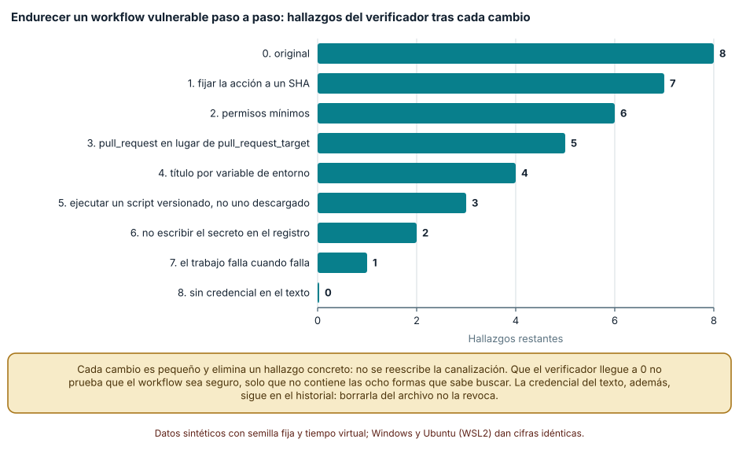
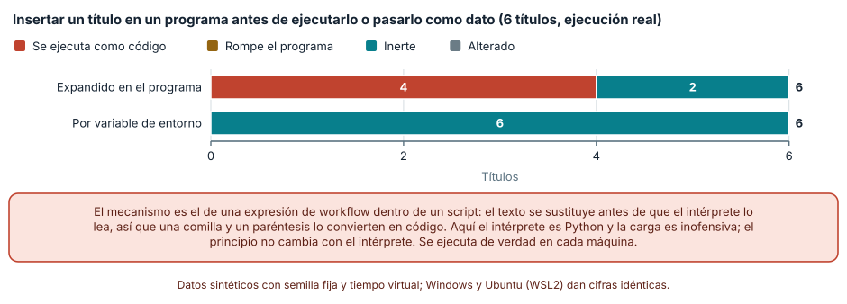
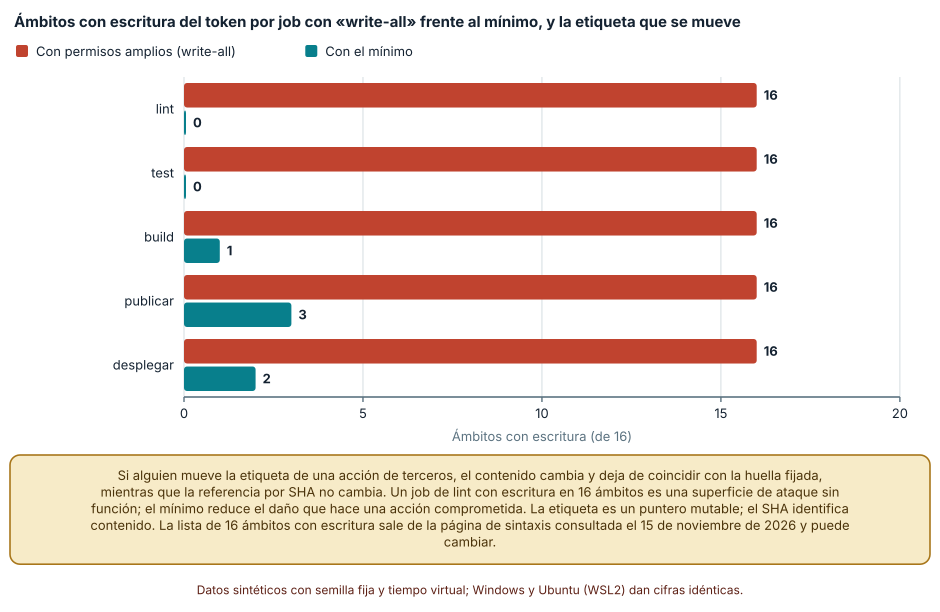

← SE-418 — Métricas DORA y mejora sin gaming · ↑ Parte 34 · 📚 Índice completo · 🌐 Portal · SE-420 — Proyecto: camino a producción con rollback →
Punto profesional y fundamento pedagógico
Punto profesional. El taller existe para que practiques lo que las clases anteriores explicaron por separado: tomar una canalización que funciona y es insegura, encontrar cada defecto con un verificador, corregirlo con el cambio más pequeño posible y demostrar con una prueba que el cambio hizo lo que decía. La habilidad profesional es endurecer sin romper, con evidencia por cada paso y con la honestidad de declarar qué el verificador no puede ver.
Por qué aparece aquí. Sigue a Métricas DORA y mejora sin gaming: la clase anterior enseñó a medir la entrega sin engañarse; este taller aplica esa disciplina a la seguridad de la canalización, donde también hay atajos (marcar como «resuelto» lo que se silenció). Reúne identidades de corta vida (SE-412), compuertas (SE-411), acciones fijadas y permisos mínimos (SE-410). El caso conductor sigue siendo la canalización de la API de entregas, que aquí aparece con ocho defectos conocidos.
Error conceptual que debe corregir. Creer que endurecer es añadir herramientas de análisis: las herramientas encuentran, pero cada hallazgo se cierra con un cambio concreto en el archivo y con una prueba, y un verificador que llega a cero hallazgos solo demuestra que no están las ocho formas que sabe buscar.
Secuencia de aprendizaje. Antes de mirar los resultados, predices cuántos hallazgos tiene el flujo de trabajo vulnerable y cuántos de seis títulos de solicitud se ejecutan como código al insertarse en un script; después aplicas ocho correcciones una por una midiendo el verificador, ejecutas la inyección de verdad y la evitas pasando el dato como variable, y comparas los permisos del token. La secuencia usa predicción, explicación propia, contraste y recuperación. ICAP distingue participación de construcción de conocimiento; How People Learn II respalda diseñar la práctica con contextos reales y retroalimentación.
Evidencia de aprendizaje. hardening-log.md con la predicción, las tres figuras reproducidas, el flujo de trabajo original y el endurecido, la lista de ocho cambios cada uno con su hallazgo y su prueba, y una nota que separe qué parte de cada conclusión es medida, cuál inferida y cuál supuesta.
Límite de la conclusión. El flujo vulnerable es un ejemplo escrito por el autor con las ocho formas de defecto más conocidas, no un archivo de un repositorio real; las reglas del verificador son las de SE-411. La inyección se ejecuta de verdad pero con Python como intérprete y una carga inofensiva; no se ejecutó ningún flujo de trabajo en una plataforma real ni se atacó ningún sistema. La lista de ámbitos del token se leyó de la documentación de GitHub el 15 de noviembre de 2026 y puede cambiar.
Trazabilidad fuente → afirmación
| Fuente primaria u oficial | Afirmación que respalda | Lo que no prueba |
|---|---|---|
| GitHub Actions: uso seguro | Recomienda fijar acciones a un SHA completo, usar variables de entorno intermedias para entradas no confiables y limitar los permisos del token. | No lista todos los ataques posibles ni garantiza que cumplirlas baste. |
| GitHub Security Lab: cómo evitar las «solicitudes pwn» | Explica por qué ejecutar el código de una solicitud de integración con el evento privilegiado pull_request_target expone secretos y permisos. | No sustituye la revisión de cada caso en el que se necesite ese evento. |
| GitHub Actions: eventos que activan flujos | Documenta que pull_request_target se ejecuta en el contexto de la rama base con acceso a secretos, a diferencia de pull_request. | No define qué es seguro hacer dentro de él. |
| OWASP Top 10 CI/CD Security Risks | Cataloga riesgos de las canalizaciones (controles débiles, ejecución de dependencias, gestión de credenciales). | Es un catálogo de riesgos, no una lista exhaustiva ni una norma. |
| OpenSSF Scorecard y zizmor | Son herramientas que auditan configuraciones de repositorios y flujos de trabajo con reglas publicadas. | No se ejecutaron en esta clase; sirven para comparar con el verificador mínimo. |
Antes de empezar
Recupera lo aprendido en SE-412: una credencial de corta vida limita el daño si se filtra, y en SE-411: una compuerta de texto tiene falsas alarmas y defectos que no ve. La pregunta activa es: si alguien con acceso de lectura al repositorio abriera una solicitud hostil, ¿qué podría alcanzar la canalización que la procesa?
Prerrequisitos
- Haber completado
SE-418y las clasesSE-410aSE-412, o poder explicar permisos, acciones fijadas y reglas de texto. - Python 3.11 o posterior; los experimentos usan solo la biblioteca estándar (
re,subprocess,hashlib). - Saber leer un archivo de flujo de trabajo (YAML) y qué es un evento de activación.
Problema auténtico
Caso ilustrativo, no un incidente real: un colaborador externo abre una solicitud de integración a la API de entregas con un título peculiar. El flujo de trabajo del repositorio se activa con pull_request_target, descarga el código del cambio, escribe el título del PR en un mensaje con una expresión insertada en un script, ejecuta un instalador descargado con curl y publica con un token de despliegue que escribe en el registro del log. Cada detalle por separado parecía una comodidad. Juntos, un título con una comilla y un paréntesis ejecuta código del atacante con los permisos y los secretos del repositorio. El taller no demuestra un ataque: construye el flujo que lo permitiría, lo mide, lo repara y comprueba cada reparación.
Objetivos observables
Al terminar podrás:
- enumerar los hallazgos de un flujo de trabajo con un verificador de reglas y asociar cada uno con una amenaza;
- aplicar un cambio mínimo por hallazgo y mostrar con una prueba que el hallazgo desaparece y que nada más cambia;
- demostrar la inyección de comandos con una entrada hostil inofensiva y evitarla pasando el dato como variable de entorno;
- explicar por qué una acción fijada por etiqueta puede cambiar de contenido y una fijada por SHA no;
- reducir los permisos del token por trabajo y calcular la superficie que se elimina.
Mapa conceptual
Ver la notación fuente del diagrama
flowchart LR
A[Flujo vulnerable] --> B[Verificador: 8 hallazgos]
B --> C[Un cambio por hallazgo]
C --> D[Prueba: el hallazgo desaparece]
D --> E{Quedan hallazgos}
E -->|sí| C
E -->|no| F[Flujo endurecido]
F --> G[Qué no ve el verificador]
G --> H[Revisión humana y otras herramientas]El mapa insiste en el ciclo corto: un hallazgo, un cambio, una prueba. Corregir varios a la vez hace imposible saber qué cambio resolvió qué, y un cambio grande puede romper el despliegue sin que se sepa por qué.
Temas y por qué importan
| Tema | Por qué cambia una decisión profesional | Evidencia mínima |
|---|---|---|
| Amenazas de una canalización | Un flujo de trabajo tiene secretos y permisos; quien lo controla controla el despliegue. | Lista de activos y de quién los puede alcanzar |
| Entradas no confiables | El texto de una solicitud de integración es una entrada del atacante. | Figura 2 y la inyección demostrada |
| Eventos privilegiados | pull_request_target ejecuta con secretos; mezclarlo con el código del cambio es la combinación peligrosa. | Cambio de evento y prueba |
| Acciones y permisos | Una etiqueta se mueve y un token amplio multiplica el daño. | Figura 3 y los permisos por trabajo |
| Verificar el endurecimiento | Un verificador en cero no es una garantía. | Figura 1 y la lista de lo que no ve |
Conceptos y decisiones
1. Qué hay que proteger en una canalización
Un flujo de trabajo es un programa que se ejecuta con privilegios. Tiene secretos (tokens de despliegue, claves de registro), un token propio con permisos sobre el repositorio, acceso de escritura a artefactos y entornos y, a menudo, identidad ante la nube. Quien consigue ejecutar código dentro del flujo puede usar todo eso. Los atacantes plausibles son un contribuidor externo con una solicitud hostil, una dependencia o acción de terceros comprometida y una cuenta de colaborador robada. El modelo de amenazas de la canalización responde tres preguntas: qué activos hay, quién puede influir en lo que se ejecuta y qué haría con los privilegios. Los hallazgos del taller son las respuestas concretas a la segunda pregunta: texto de terceros insertado en un script, código de terceros descargado y ejecutado, eventos que dan privilegios a código no revisado.
2. Inyección por expansión de expresiones
Cuando un flujo de trabajo escribe echo "${{ github.event.pull_request.title }}" dentro de un script, la plataforma sustituye la expresión por el texto del título antes de pasar el script al intérprete. Si el título contiene una comilla y un comando, el texto resultante ya no es un dato sino parte del programa. Es una inyección clásica, igual que concatenar entrada de usuario en una consulta SQL. La defensa recomendada por GitHub es pasar el dato mediante una variable de entorno intermedia (env: TITULO: ${{ … }} y usar "$TITULO" en el script): el intérprete lee la variable como valor, nunca como código. La regla general es que ninguna expresión con contenido de un tercero debe aparecer dentro de un script; las controladas por el sistema (el SHA del commit, el número de la solicitud) no son peligrosas porque no las escribe quien ataca.
3. Eventos privilegiados
El evento pull_request ejecuta el flujo de trabajo del cambio con permisos reducidos y sin secretos cuando viene de una bifurcación. El evento pull_request_target ejecuta el flujo de la rama base, con acceso a secretos y permisos de escritura, pensado para tareas como etiquetar o comentar. El peligro aparece al combinarlo con una descarga del código del cambio (ref apuntando al SHA de la cabeza de la solicitud): se ejecuta código no revisado con privilegios completos. El patrón se conoce como «solicitud pwn». La defensa es no descargar ni ejecutar código del cambio en un evento privilegiado, o dividir el trabajo en dos flujos: uno sin privilegios que construye y prueba, y otro privilegiado que solo consume el resultado como datos. Si no hace falta el evento privilegiado, se usa pull_request.
4. Acciones de terceros y permisos del token
Una acción de terceros es código que se ejecuta dentro de tu flujo. Se referencia por una etiqueta (@v4), que es un puntero que su autor puede mover, o por un SHA completo, que identifica un contenido. Fijar por SHA hace que un cambio posterior en el repositorio de la acción no llegue a tu canalización sin que lo decidas. El token del flujo tiene permisos configurables; con write-all cada trabajo recibe escritura sobre todos los ámbitos, incluidos los que no necesita. Reducir los permisos al mínimo por trabajo (contents: read para quien solo lee) limita lo que puede hacer una acción comprometida. Es la misma lógica del mínimo privilegio que se aplicó al rol de la nube en SE-412.
5. Verificar un endurecimiento y declarar lo que no se ve
El verificador de reglas de SE-411 encuentra ocho clases de defecto en texto. Tras ocho cambios, su resultado es cero. Eso no significa que el flujo sea seguro: significa que no contiene esas ocho formas. No ve las dependencias que instala el script, las acciones locales o reutilizables cuyo contenido no se inspecciona, las condiciones lógicas (quién puede aprobar un despliegue), ni un secreto que ya está en el historial. Por eso el endurecimiento termina con tres cosas: una prueba por regla, una lista de lo que el verificador no ve y una revisión humana del flujo completo. La credencial que estaba en el texto, además, no se corrige borrándola: se revoca, porque el historial la conserva.
El taller: ocho hallazgos y ocho cambios
El flujo de trabajo vulnerable del caso:
name: ci
on:
pull_request_target:
permissions: write-all
jobs:
build:
runs-on: ubuntu-latest
continue-on-error: true
steps:
- uses: actions/checkout@v4
with:
ref: ${{ github.event.pull_request.head.sha }}
- run: echo "${{ github.event.pull_request.title }}"
- run: curl -sSL https://example.invalid/i.sh | bash
- run: echo "token=${{ secrets.DEPLOY_TOKEN }}"
- run: deploy --token <TOKEN_EJEMPLO_CON_FORMA_DE_TOKEN_DE_GITHUB>En el código del experimento, el marcador <TOKEN_EJEMPLO_CON_FORMA_DE_TOKEN_DE_GITHUB> se sustituye en tiempo de ejecución por una cadena inventada con la forma de un token (se construye por partes para que los buscadores de secretos no la confundan con una credencial real). El verificador encuentra 8 hallazgos. Se aplican ocho cambios, uno por vez, y tras cada uno se mide el verificador.
| Cambio aplicado | Hallazgos restantes |
|---|---|
| 0. Original | 8 |
| 1. Fijar la acción a un SHA | 7 |
| 2. Permisos mínimos | 6 |
3. pull_request en lugar de pull_request_target | 5 |
| 4. Título por variable de entorno | 4 |
| 5. Ejecutar un script versionado, no uno descargado | 3 |
| 6. No escribir el secreto en el registro | 2 |
| 7. El trabajo falla cuando falla | 1 |
| 8. Sin credencial en el texto | 0 |
Cada cambio elimina exactamente un hallazgo. El flujo final es más corto y no ejecuta nada que no esté en el repositorio. La credencial del último cambio sigue en el historial y debe revocarse.

Cómo leer la figura. Cada fila es el estado del flujo tras un cambio; la columna es el número de hallazgos del verificador. Dónde deja de valer: el verificador es el de reglas de texto de SE-411; un cero no prueba seguridad, solo ausencia de ocho patrones. El orden de los cambios es didáctico: en un caso real el cambio 3 (el evento) podría ser el primero por riesgo, y varios cambios dependen de decisiones de diseño (cómo se ejecutará el script versionado).
La inyección, ejecutada de verdad
Se simula la expansión de una expresión dentro de un script. El «script» es un programa de Python print("titulo: {{TITULO}}") en el que se sustituye el texto del título antes de ejecutarlo (la expansión de la plataforma) y se compara con pasar el título por una variable de entorno. Se prueban seis títulos, cuatro hostiles y dos inocuos; la carga hostil solo imprime la palabra «INYECTADO» o evalúa una operación.
| Título de entrada | Expandido en el programa | Por variable de entorno |
|---|---|---|
x"); print("INYECTADO | se ejecuta como código | inerte |
x"); import os; print("INYECTADO", os.name)# | se ejecuta como código | inerte |
x\"); print('INYECTADO | se ejecuta como código | inerte |
a" + str(7*7) + "b | se ejecuta como código | inerte |
ok | inerte | inerte |
| título normal con «tildes» y comillas simples | inerte | inerte |
Cuatro de seis títulos se convierten en código al expandirse en el programa; con la variable de entorno los seis son datos.

Cómo leer la figura. Cada fila es una entrada; la segunda columna es lo que ocurre cuando el texto pasa a formar parte del programa y la tercera cuando se pasa como dato. Dónde deja de valer: el intérprete es Python y la carga es inofensiva; con un intérprete de comandos la sintaxis de la inyección difiere (sustituciones de comandos, punto y coma) pero el principio es el mismo. La ejecución es real en cada máquina; el experimento no ataca ningún sistema ni usa red.
Permisos y fijación por huella
Se cuentan los ámbitos con escritura que recibe cada trabajo con write-all frente al mínimo necesario (16 ámbitos con escritura según la página de sintaxis consultada el 15 de noviembre de 2026). Además se modela una acción de terceros como un árbol de archivos con una huella (SHA-256), se fija esa huella y se mueve la etiqueta a un contenido distinto.
| Trabajo o situación | Con permisos amplios | Con el mínimo (escrituras) |
|---|---|---|
| lint | 16 de 16 | 0 |
| test | 16 de 16 | 0 |
| build | 16 de 16 | 1 |
| publicar | 16 de 16 | 3 |
| desplegar | 16 de 16 | 2 |
| Etiqueta de una acción movida | el contenido ya no coincide con la huella fijada | la referencia por SHA no cambia |
Con permisos amplios cada trabajo puede escribir en 16 ámbitos; con el mínimo, entre cero y tres. Mover la etiqueta cambia el contenido que se descargaría, y la huella fijada lo detecta.

Cómo leer la figura. Las cinco primeras filas comparan permisos; la última, la diferencia entre una etiqueta y un SHA. Dónde deja de valer: el mínimo de cada trabajo es una elección del autor para esta canalización; una acción de publicación real puede necesitar más. El árbol de la acción es una abstracción: en una plataforma real el SHA es el de un commit de git, que identifica su árbol completo.
Definiciones de trabajo
- inyección por expansión: ejecución de texto de un tercero como código porque se sustituyó en un script antes de que el intérprete lo leyera.
- evento privilegiado: evento de activación cuyo flujo se ejecuta con secretos y permisos de escritura aunque lo origine un tercero.
- fijar por SHA: referenciar una acción por el identificador completo de un contenido en lugar de una etiqueta que puede moverse.
- mínimo privilegio: concesión a cada trabajo de solo los permisos que necesita.
- hallazgo: coincidencia de una regla del verificador con un patrón de riesgo.
Las definiciones son operativas para el taller de la API de entregas. No convierten términos con una historia más amplia en sinónimos y deben contrastarse con la documentación primaria enlazada al final.
Ejemplo mínimo
El fragmento muestra la diferencia entre insertar un dato en el texto de un programa y pasarlo como variable. Antes de ejecutarlo, predice cuál de las dos salidas contiene la palabra INYECTADO.
import os, subprocess, sys
titulo = 'x"); print("INYECTADO'
en_texto = subprocess.run([sys.executable, "-c", 'print("titulo: ' + titulo + '")'], capture_output=True, text=True).stdout
en_entorno = subprocess.run([sys.executable, "-c", 'import os; print("titulo: " + os.environ["T"])'], capture_output=True, text=True, env={**os.environ, "T": titulo}).stdout
print(repr(en_texto)); print(repr(en_entorno))La primera salida es 'titulo: x\nINYECTADO\n': la segunda instrucción se ejecutó. La segunda es 'titulo: x"); print("INYECTADO\n': el mismo texto, sin ejecutarse. Registra versión de Python, comando y salida; después prueba un título que no tenga comillas y comprueba que las dos salidas coinciden.
Ejemplo profesional
El equipo de la API de entregas aplica el taller a su canalización real. Primero ejecuta el verificador sobre todos los flujos de trabajo y obtiene hallazgos en tres de once. Para cada hallazgo abre un cambio pequeño con su prueba: la acción fijada por SHA (con un comentario que indica la versión legible), los permisos declarados por trabajo, el evento cambiado a pull_request y el título pasado como variable. El script descargado se sustituye por uno versionado en el repositorio que verifica la huella de lo que descarga. El secreto escrito al registro se elimina, se revoca el token y se emite uno nuevo con la identidad de corta vida de SE-412. Añaden una prueba que ejecuta el verificador en cada cambio de la carpeta de flujos y bloquea la integración si reaparece un patrón. Escriben la lista de lo que el verificador no ve (las dependencias que instalan los scripts, las acciones reutilizables, la lógica de aprobación) y la asignan a una revisión trimestral con otra herramienta y con una persona. Compara con el punto de partida: cada defecto tiene un cambio, una prueba y un dueño, y existe una lista honesta de lo que falta.
Práctica guiada
- Copia el flujo vulnerable del taller, ejecuta el verificador y comprueba que da 8 hallazgos antes de tocar nada.
- Predice cuántos de seis títulos se ejecutan como código al expandirse en un programa y escribe tu estimación.
- Aplica los ocho cambios en orden, ejecuta el verificador tras cada uno y registra el número de hallazgos.
- Ejecuta la inyección con los seis títulos y comprueba que con la variable de entorno ninguno se ejecuta; añade un título hostil propio.
- Calcula los ámbitos con escritura de cada trabajo con permisos amplios y con el mínimo que has elegido.
- Modela una acción como un árbol de archivos con huella y comprueba que mover la etiqueta cambia la huella.
- Entrega
hardening-log.mdy pide a otra persona que escriba un flujo de trabajo con un defecto que tu verificador no ve.
Ejercicios
- Orden: reordena los ocho cambios por riesgo y justifica el primero; explica qué cambiaría en el resultado si se aplicara en ese orden.
- Inyección: escribe tres entradas que el «script» de Python no ejecute y una que sí aunque uses una variable de entorno si el programa la inserta después en otro texto ejecutable.
- Permisos: elige el mínimo de permisos para un trabajo que comenta resultados en la solicitud de integración y para otro que publica una imagen, y justifica cada ámbito.
- Límites: lista cinco defectos de una canalización que el verificador de ocho reglas no puede ver y propón cómo detectar cada uno.
Reto verificable
Entrega hardening-log.md con la predicción, las tres tablas, el flujo original y el endurecido, un cambio con su prueba por cada hallazgo y la lista de lo que el verificador no ve. Se aprueba si otra persona ejecuta el código desde un checkout limpio, obtiene las mismas tablas con las mismas semillas, y puede decir qué hallazgo se cerró con qué cambio y qué sigue sin estar cubierto. No se aprueba por declarar el flujo «seguro» porque el verificador da cero ni por borrar una credencial del archivo sin revocarla.
Caso conductor
La canalización de la API de entregas es el caso conductor de la Parte 34. Esta clase deja el undécimo artefacto: el flujo endurecido, con una prueba por regla y una lista de lo que no se ve. SE-420 integra todo en el camino a producción con retroceso y exige que el paquete de evidencia incluya esta verificación. Cambia después un solo dato, el título hostil, y observa cuál de las dos formas lo ejecuta.
Preguntas frecuentes
¿Por qué no usar siempre pull_request_target si necesito comentar en el PR?
Porque lo que necesitas es poder escribir un comentario, no ejecutar código del cambio con secretos. Puedes usar pull_request para construir y probar sin privilegios y un segundo flujo, activado por la finalización del primero, que reciba su resultado como datos y comente con los permisos necesarios.
¿Fijar por SHA impide recibir correcciones de seguridad de la acción?
Impide recibirlas sin que lo decidas. Para no quedarse atrás se usa una herramienta que proponga las actualizaciones como cambios que se revisan, de modo que la versión nueva entra como un cambio visible y no como una sorpresa.
¿Un verificador en cero significa que el flujo es seguro?
No. Significa que no contiene los patrones que busca. No ve la lógica de aprobaciones, las dependencias instaladas por los scripts ni las acciones reutilizables. Se complementa con otras herramientas, con pruebas de los propios flujos y con revisión humana.
¿Qué hago con la credencial que estaba en el texto?
Revócala y emite una nueva, mejor de corta vida. Después, si procede, limpia el historial. Limpiar sin revocar no protege nada: cualquiera que clonó el repositorio ya tiene el valor.
Fallo controlado y diagnóstico
Reproduce el fallo clásico de la clase: un título de solicitud que se ejecuta como código al insertarse en un script. Ejecuta los seis títulos con la expansión en el programa.
Registra síntoma, entrada mínima, hipótesis, observación que descarta cada hipótesis, causa, corrección y prueba de regresión. Síntoma: el registro de una ejecución muestra la palabra INYECTADO que nadie escribió en el flujo. Hipótesis rivales: (a) alguien modificó el flujo de trabajo; (b) la plataforma tiene un defecto; (c) un título con comilla se sustituyó dentro del script y la segunda instrucción es del título. Prueba: compara el script tal como llegó al intérprete con el flujo del repositorio; si la línea extra aparece solo en el texto sustituido, la causa es la expansión. Conclusión: cuatro de seis títulos se ejecutan al insertarse; el flujo trataba un dato de un tercero como código. Regresión: pasa el título por una variable de entorno y añade una prueba que ejecute los seis títulos y exija que ninguno imprima INYECTADO. No cambies a la vez el título y el intérprete.
Errores comunes y cómo corregirlos
| Síntoma | Causa probable | Corrección |
|---|---|---|
| Un título o rama ejecuta código en el flujo | Expresión insertada en un script | Variable de entorno intermedia |
| Una solicitud externa accede a secretos | Evento privilegiado más código del cambio | pull_request o dos flujos separados |
| Una acción cambia de comportamiento sin aviso | Referencia por etiqueta | Fijar por SHA y actualizar con un cambio revisado |
| Un trabajo de lint puede publicar paquetes | Permisos amplios | Permisos mínimos por trabajo |
| El verificador llega a cero y hay un incidente | Se confió en la ausencia de hallazgos | Lista de lo que no ve y revisión humana |
Entorno y archivos clave
work/SE-419/
├── README.md
├── taller/
│ ├── vulnerable.yml
│ ├── verificador.py
│ └── inyeccion.py
├── tests/test_taller.py
└── evidence/hardening-log.mdEl README declara plataforma, versión de Python, semillas y comandos. Los experimentos usan la biblioteca estándar (re, subprocess, hashlib) y se ejecutaron con CPython 3.12.9 en Windows 11 y 3.12.3 en Ubuntu bajo WSL2: las salidas fueron idénticas. La inyección se ejecuta con Python y una carga que solo imprime; no ejecutes cargas reales ni apuntes a sistemas ajenos.
Seguridad, ética y accesibilidad
- practica solo sobre tu propio repositorio o sobre el flujo del taller; probar entradas hostiles en un repositorio ajeno sin permiso es un acceso no autorizado;
- no publiques una credencial real ni siquiera como ejemplo: usa valores inventados y márcalos como tales;
- un hallazgo en un repositorio de terceros se comunica de forma privada a sus mantenedores;
- los resultados del verificador deben ser legibles en texto, con la línea y la regla de cada hallazgo;
- documenta las tablas con el texto alternativo de cada figura.
Puente hacia el trabajo con agentes
Un agente al que se le pide «endurece este flujo de trabajo» probablemente reescribirá el archivo entero de una vez, añadirá permisos y un par de acciones de seguridad y declarará el flujo seguro. Pídele en cambio que ejecute el verificador antes y después, que aplique un cambio por hallazgo con su prueba, que ejecute la inyección con entradas hostiles inofensivas y que liste lo que el verificador no ve. Revisa especialmente si borra una credencial del archivo sin revocarla y si cambia varias cosas en un solo commit: son los dos defectos que este taller mostró con medidas.
Transferencia
Traslada el taller a otra canalización (por ejemplo, la de una biblioteca que publica paquetes en un registro): cambia los eventos, las acciones y los permisos, y conserva el procedimiento de medir, corregir de a un hallazgo, probar cada cambio y declarar lo que el verificador no ve. La transferencia está lograda cuando puedes decir qué defecto de tu flujo ningún verificador de texto encontraría, no cuando los ocho cambios se parecen a los del taller.
Evaluación y evidencia
| Criterio | Evidencia para aprobar |
|---|---|
| comprensión | explicación de la inyección por expansión, del evento privilegiado y de la fijación por SHA |
| corrección | tablas de hallazgos, inyección y permisos reproducibles con las mismas semillas |
| diseño | flujo endurecido con un cambio y una prueba por hallazgo y una lista de lo que no se ve |
| diagnóstico | reproducción de la inyección con la regresión que la evita |
| incertidumbre | declaración de que el flujo, las reglas y la carga son del autor y de que el cero no prueba seguridad |
| reproducibilidad | versiones, comandos, salida y límites declarados |
Fuentes
- GitHub Actions: uso seguro — fijar acciones, variables intermedias y permisos; autoridad: documentación de GitHub.
- GitHub Security Lab: preventing pwn requests — riesgo de
pull_request_targetcon código del cambio; autoridad: GitHub Security Lab. - GitHub Actions: eventos que activan flujos — contexto de ejecución de cada evento; autoridad: documentación de GitHub.
- OWASP Top 10 CI/CD Security Risks — catálogo de riesgos de canalizaciones; autoridad: OWASP.
- OpenSSF Scorecard — auditoría automática de prácticas de seguridad de repositorios; autoridad: OpenSSF.
- zizmor — auditoría estática de flujos de GitHub Actions; autoridad: documentación del proyecto.
Cada fuente respalda el mecanismo indicado; ninguna demuestra que los 8 hallazgos, los 4 títulos ejecutados o los 16 ámbitos con escritura se observen en tu canalización. Esa afirmación depende de tus flujos, de tu plataforma y de la versión vigente de su documentación.
Límites y siguiente paso
Se ejecutaron tres experimentos en Windows y Ubuntu (WSL2) con resultados idénticos. No se ejecutó ningún flujo de trabajo en una plataforma real ni se atacó ningún sistema; el flujo vulnerable es un ejemplo del autor, el verificador es el de reglas de texto de SE-411 con los límites que allí se midieron, la inyección usa Python y una carga inofensiva, el árbol de la acción es una abstracción y los mínimos de permisos de cada trabajo son una elección del autor. No se ejecutaron OpenSSF Scorecard ni zizmor. La última clase de la parte integra todo en un camino a producción con retroceso.
Glosario
- inyección por expansión: ejecución de texto de un tercero como código porque se sustituyó en un script antes de que el intérprete lo leyera.
- evento privilegiado: evento de activación cuyo flujo se ejecuta con secretos y permisos de escritura aunque lo origine un tercero.
- fijar por SHA: referenciar una acción por el identificador completo de un contenido en lugar de una etiqueta que puede moverse.
- mínimo privilegio: concesión a cada trabajo de solo los permisos que necesita.
- hallazgo: coincidencia de una regla del verificador con un patrón de riesgo.
← SE-418 — Métricas DORA y mejora sin gaming · ↑ Parte 34 · 📚 Índice completo · 🌐 Portal · SE-420 — Proyecto: camino a producción con rollback →